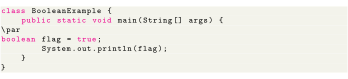

Next:
byte
Up:
8 Primitive Data Types
Previous:
8 Primitive Data Types
Contents
boolean
The
data type has two possible values, either
or
. Default value is always
. They are usually used for true/false conditions. For example,

 or
. Default value is always
. They are usually used for true/false conditions. For example,
or
. Default value is always
. They are usually used for true/false conditions. For example,